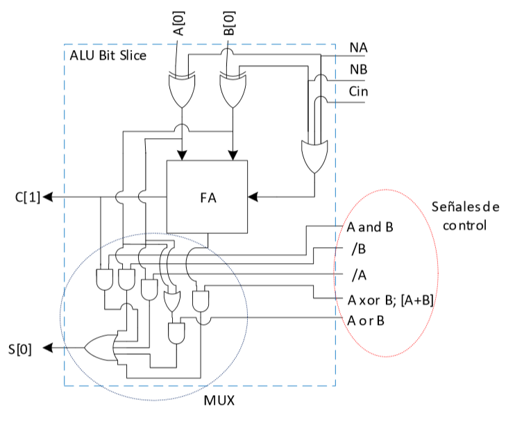
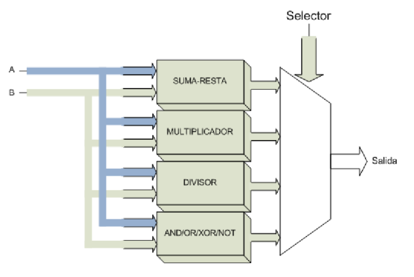

Una ALU (Unidad Aritmética-Lógica) es un circuito que permite, como su nombre lo indica, realizar operaciones lógicas y aritméticas.
Además de los operadores lógicos y aritméticos, la ALU cuenta con una serie de registros para almacenar los datos, y bits de información sobre los resultados, también llamados banderas.
Las banderas más comunes son: Carry, Auxiliary Carry, Borrow, Overflow, Parity, Zero.
ALU: Unidad Aritmética Lógica. Requiere saber en cada momento lo que va a hacer.
Codificador: Interpreta el código Máquina.
Registro: Almacena la instrucción que mientras se ejecuta.
El circuito ALU es simplemente un operador, es decir, sólo realiza operaciones, no toma decisiones. Las entradas deben contener tanto la magnitud como el signo que corresponda a la operación, requiere de un mecanismo de control que le permita saber el tipo de operación a realizar.
Una forma de construir una ALU simple es mediante una célula de tipo “bit-slice”. Esta célula permite realizar la suma ó alguna operación lógica entre 2 bits.
En principio, la célula basada en un Full Adder permite realizar operaciones de SUMA, RESTA, AND, OR, XOR y NOT. Las funciones AND y XOR se toman de las salidas de CarryOut y Suma Respectivamente. Esta arquitectura tiene la limitante que, para las funciones AND y XOR, se requiere de que tanto A como B no estén negados, y que el Carry-In sea ‘0’.
Si A, o B están negadas, o si el Carry-in es ‘1’. Entonces las salidas de Carry-Out y de Suma no pueden ser utilizadas para generar las funciones AND y XOR respectivamente:
Si A, o B están negadas, o si el Carry-in es ‘1’. Entonces las salidas de Carry-Out y de Suma no pueden ser utilizadas para generar las funciones AND y XOR respectivamente:
Otro tipo de célula que se puede emplear es a base de multiplexores:
